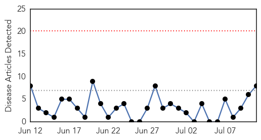
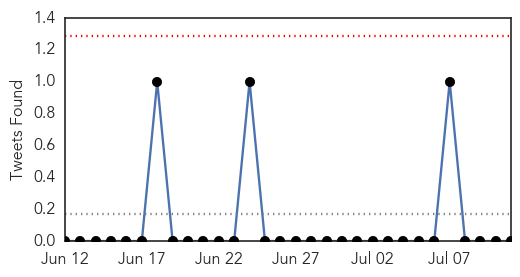

West Nile Virus
30-Day Web Trend
6 alerts, 8 warnings

30-Day Twitter Trend
0 alerts, 0 warnings

Article Locations

Article Confidences

Top Articles:
- 0.968
- First case of West Nile Virus found in Suffolk County this summer
- 0.961
- Maine towns on lookout for signs of mosquito-borne viruses
- 0.954
- West Nile Virus is alarming example of climate change’s effects
- 0.925
- West Nile Virus Found in Dead Birds in Contra Costa County...
- 0.920
- Oklahoma's first confirmed West Nile case is Major County resident
- 0.830
- West Nile's record season has residents concerned about fogging
- 0.812
- West Nile found in Oklahoma
- 0.797
- West Nile's record season has Bay Area residents concerned about fogging
- 0.696
- Prevalence of infectious diseases up in Okla.
- 0.679
- 27 Investigates: Peak of summer brings mosquito concerns
Top Tweets:
-
No tweets found for Jul 11, 2014
Cholera
30-Day Web Trend
0 alerts, 0 warnings

30-Day Twitter Trend
0 alerts, 0 warnings

Article Locations

Article Confidences

Top Articles:
- 0.829
- South Sudan facing cholera threat - Africa
- 0.805
- Médecins Sans Frontières Ireland
- 0.797
- South Sudan Crisis Situation Report No. 44 (as of 10 July 2014) - South Sudan
- 0.679
- Living Conditions in Haiti’s Capital Improve, but Rural Communities Remain Very Poor
- 0.634
- Time to Put the Spotlight on South Sudan
- 0.632
- Médecins Sans Frontières Ireland
- 0.632
- Médecins Sans Frontières Ireland
- 0.632
- Médecins Sans Frontières Ireland
Top Tweets:
-
No tweets found for Jul 11, 2014